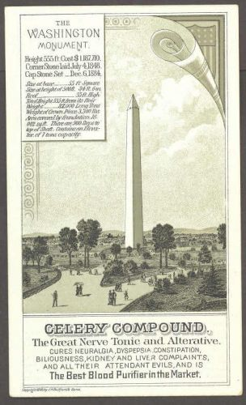

Wednesday, December the 7th, 2011
back to: title, date or indexes
Today's advent calendar picture is an old trading card for celery compound. Personally, I always thought a celery compound was a fenced-off area where you grew celery, much as the Kennedy Compound in Hyannis Port, Massachusetts is a sort of fenced-off area for the keeping of Kennedys. But apparently not. You live and learn—especially with Hooting Yard as your guide!
